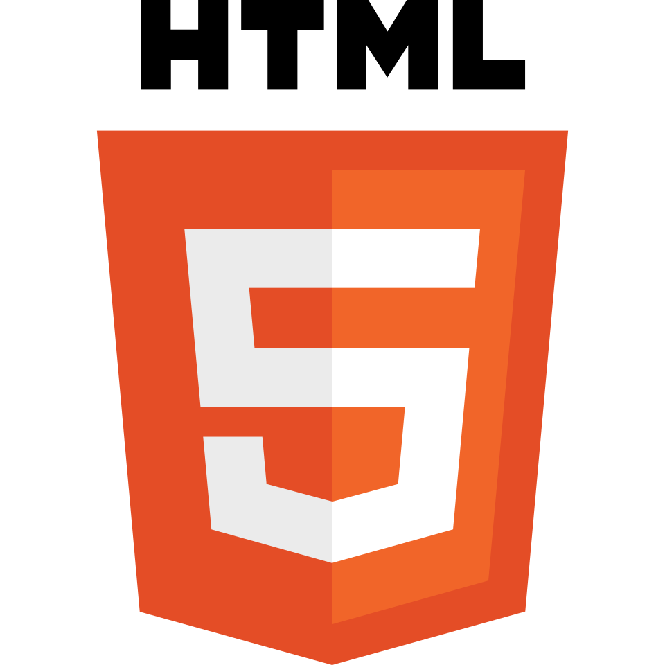
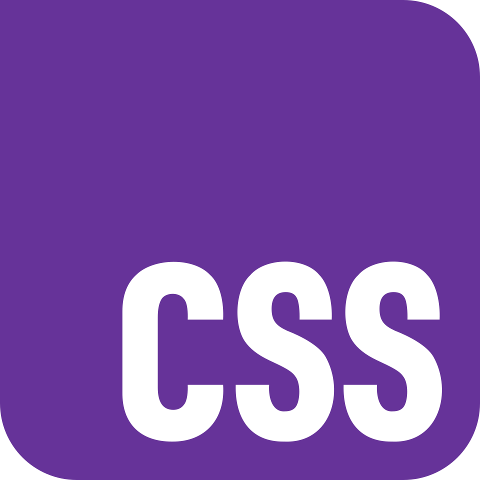
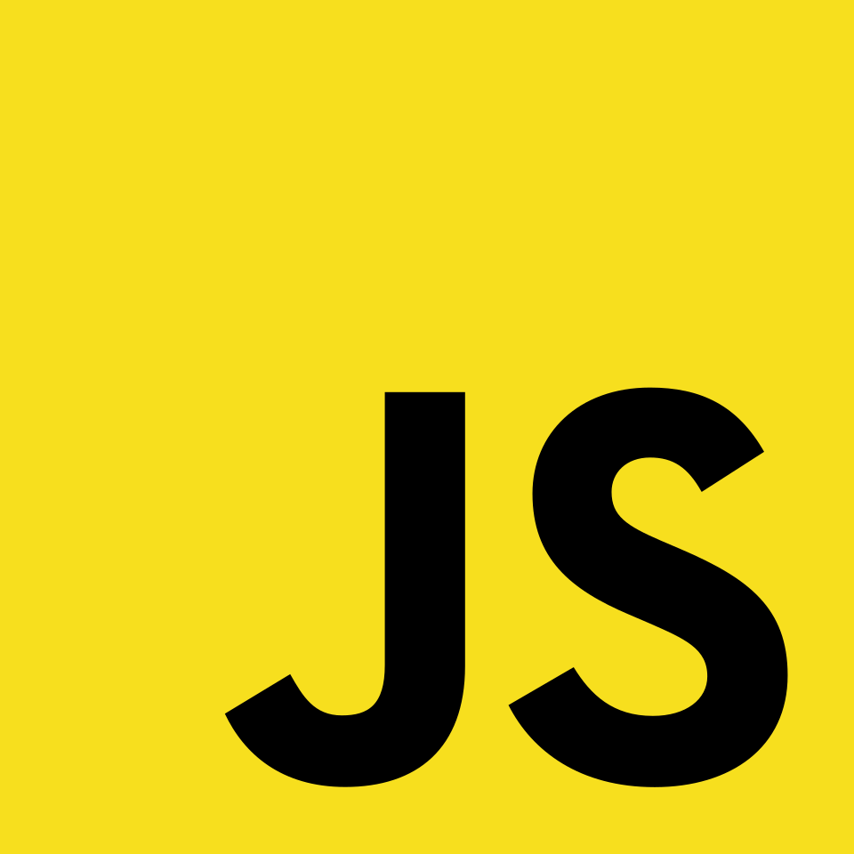
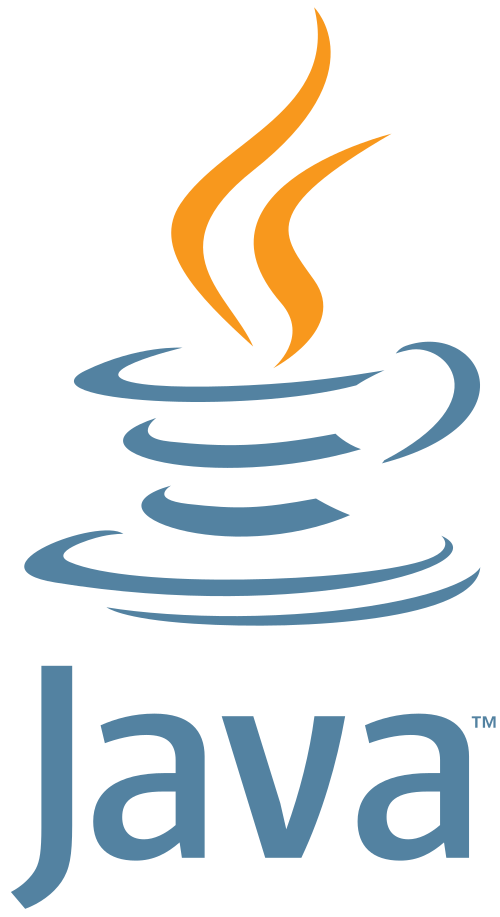

Sei mexer com HTML e CSS muito bem, e estou aprendendo JavaScript e Java.
Oi! Meu nome é Nícolas, e eu estudo desenvolvimento de Web por conta própria desde 2021.
No começo de 2026, ingressei no IFRS (Campus Erechim). Durante meu estudo por conta própria, aprendi o básico de HTML, CSS e JavaScript e este ano estou aprofundando meus estudos adicionando a linguagem de Java nas minhas habilidades.
Minha trajetória na programação começou em 2020, quando conheci o
Estudei na escola E.E.E.M. Prof. João Germano Imlau por parte do ensino fundamental, e, no ensino fundamental, ganhei duas medalhas de bronze regionais da OBMEP e dois certificadods de Menção Honrosa nacionais.
2023 - 🥉 Medalha de Bronze Regional + Menção Honrosa Nacional (OBMEP)
2025 - 🥉 Medalha de Bronze Regional + Menção Honrosa Nacional (OBMEP)
2026 - 🥈 Medalha de Prata (OBA)
Por conta da minha primeira menção honrosa, tive a oportunidade de estudar no PIC Jr (Programa de Iniciação Científica Júnior), da OBMEP, em 2024.
No ano passado (2025), estudei no Partiu IF, fiz o Processo Seletivo da instituição em que estudo agora e passei em terceiro lugar.
Escolhi o curso de Informática porque é um curso que me dá diversas oportunidades de trabalho no futuro, além de ser uma área pela qual me interesso muito desde os meus 10 anos de idade, quando comecei meu "hobby" de programação.
Além de programador, também sou músico. Toco teclado, piano, acordeão, escaleta e "brinco" de flauta doce. Hoje estudo música no Centro de Belas Artes Osvaldo Engel (teoria musical e teclado).
Gosto muito de Rock, e tenho uma profunda admiração por artistas como Rogério Skylab e Júpiter Maçã, mas também gosto de rock internacional (gosto bastante de Pixies).
Além de músico, também goasto de astronomia e aviação. Em 2024, ganhei um telescópio de 60mm. Depois disso, meu amor e admiração por astronomia e aviação só cresceu. Sempre que tem algum evento astronômico, eu estou assistindo.
Não só as artes musicais; gosto também das artes cênicas. Apesar de muitas vezes não conseguir, meu objetivo é assistir 5 filmes por semana. Gosto muito de filmes de terror. Meus filmes favoritos são Donnie Darko (2001), Funny Games (1997) e Magnólia (1999).
Além de tudo isso, também sou um leitor. O hábito começou em 2024, quando comprei dois livros do Stephen King (O Iluminado e Misery), Mickey7 e Laranja Mecânica. No ano passado, li 12 livros. Agora, em 2026, estou no meu décimo terceiro.